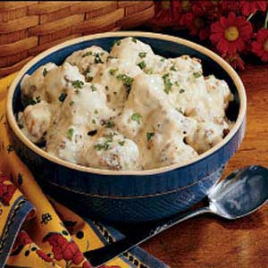

Swedish meatballs

Ingredients
- 4 eggs
- 1 cup milk
- 8 slices white bread, torn
- 2 pound ground beef
- 1/4 cup finely chopped onion
- 4 teaspoon baking powder
- 1 to 2 teaspoons salt
- 1 teaspoon peppar
- 2 tablespoons shortening
- 2 cans (10-3/4 ounches each) condensed cream of chicken soup,undiluted
- 2 cans (10-3/4 ounches each) condensed cream of mushroom soup,undiluted
- 1 can (12 ounch) evaporated milk
- minced freach parsley
Direction
- In a large bowl, beat eggs and milk. add bread; mix gently and let stand for 5 min.
add beef, onion, baking powder, salt and pepper; mix well (mixture will be soft) shape
into 1-in. balls.
- In a large skillet, brown meatballs, a few at the time, in shortening. Place in an ungreased
3-qt. baking dish. In a bowl, stir soup and milk until smooth; pour over meatballs.
Bake, uncovered, at 350° for 1 hour. sprinkle with parsley. yeiled 8-10 servings.
Nutritional information
- 399 calories
- 23g fat
- 159mg cholesterol
- 1,065mg sodium
- 20g carbohydrate
- 1g fiber
- 27g protein
Comments
Lars says:
5/5